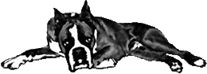

Tamavenk's Log
Zivotopis:
trollim rodicum narozeny troll. Otec technik, jej vzdy vedl ke kutilstvi pro ktere mel mlady velke nadani. Schopnost najit a opravit chybu temer v jakemkoli mechnickem nebo elektronickem zarizeni, byla v uz v Tomovych patnacti temer zazracna. Kdyz se potom otec i se starsim bratrem zabyli v aute, dostal se Tom do stinu, kde se pokousi uzivit svou technickou zrucnosti.
introduction
Potredoval jsem si vyridt nejake veci na netu a navic zacaly dochazet prasule, reseni je na snade. Kosta kafe.
Je to podivnej bar, oblozenej lidskejma kostma (rasisti), kterej snad byl kdysi soucacti nejaky obchodni site typu McDonalds. Uz nejakou dobu vim, ze jsou tam za rozumnou cenu k dostani nejaky ty neregistrovany trixovy vteriny, takze se tam schazej moviti ilegalove z cely ctvrti, coz je presne to co prave potrebuju.
"pro poruchu systemu dnes bez site", stalo na dverich.
Zda se, ze prace roste na stromech.
Cerna servirka si poslechla mou nabidku a po kratsim rozhovoru se sefem souhlasila.
Pry uz se to pokouseli opravit tri lidi a stejne to zas nejede - lamy.
Pustil jsem se do toho. Naprosto jasne bylo, ze celej jeden rozbocovac je spalenej, navrhnul jsem sefikovi, ze skocim koupit novej. Souhlasil, ale to uz pry udelali ti predemnou. Hmm, tak v cem to muze byt?
Na poradnou analyzu jsem nemel naradi, nastesti dal sefik zalohu, tak jsem moh jit nakoupit.
"Yoshimotova opravna cehokoli.", stalo na fixem rozmocenem kusu kartonu.
A taky ze jo. Na naprosto nenapadnem a nevhodnem miste, na dvore za sklady luxusniho obchodaku, jsem nasel hi-tech raj. Vsude rozhazene kusy elektroniky, tezky oder kalafuny, pripaleneho plastu a taveneho zlata.
"Co pan pseje si?", ozvalo se hodne ze spodu.
Jak se ukazalo, hlasek patril malinkemu asiatu ve spinavem bilem plasti.
Nadiktoval jsem tedy sve pozadavky, chvilku jsme se dohadovali o cene, ale vedel jsem presne co chci a za kolik.
V Kosti uz byli cely nervozni, ale se spravnou vybavou nebyl problem najit zkrat v instalaci ve zdi a opravit jej.
Sef mel radost, ja panaka zdarma a nove vybavco, no neber to.
Kdyz jsem dopijel svuj gin, vsim jsem sem si, ze na me vejra nejakej prtavej cernosskej mladik od baru. Uplne sem to jeho smirovani citil.
Asi este nevidel odpocivajiciho trolla, rek sem si.
Zachvilku ale prysel dalsi gin i se vzkazem.
"Prosim prijd ven. ~cernoch od baru"
Upravil jsem si v kapse boxer, jeden nikdy nevi...
Cernusek mel zajimavou nabidku. Pry u nej muzu zadaco bydlet, kdyz se mu postaram o bezpecnost domu.
Rek jsem mu, ze lidi nemlatim, ale on nastesti myslel elektroniku. Tak jsem to vzal.
Mel hezkej bejvak v jednom z tech novejch Londynskejch satelitu, bezbarierovej i pro trolla. To a taky, ze me zrovinka rano vyhodil z podnajmu, me presvedcilo.
Zaregistroval otisk me packy do zamku na dverich - hned jsem si vsim, ze to je posledni novinka, dost mimo mou ligu - a vymezil me a memu psovi pokoj.
Sice bez postele, ale pry ji zajisti.
A pak me prastil. Myslel jsem, ze mi v hlave vybuch granat.
Kdyz jsem se probral, sedel na proti me na zidli, jako kdyz se nechumeli.
Uz uz jsem mu chtel jednu ubalit, kdyz zacal s prednaskou.
Uz nevim co presne mlel, jen si pamatuju, ze tvrdil, ze jsem jeden z tech vytahovacu kraliku z klobouku.
"To ja poznam moc dobre.", naparoval se. Slizoun jeden. Vzdyt je to absurdni!
Nacpal mi hromadu knih, podle kterejch se pry mam ucit nejaky cviky. Parada!
Sel jsem si lehnout.
Dalsi den nikdo nebyl doma, tak jsem rozebral ten zamek, vzdyt kvuli tomu jsem prisel.
Hmm, nic slozityho, dokonce jsem se naucil i par finticek, co a jak.
Mezitim prisel slizoun a byl z toho bordelu nejakej spatnej. Honem sem to zavrel a vodkracel jsem z Boxym na prochazku.
Vodpoledne v parku bylo jeste docela teply, tak sem si sed na lavku, zapalil si doutnicek a pustl se do jedny z tech slizounovejch knih. Cely to bylo desne tajemny, ale jinak to byl vlastne jen navod, jak ma clovek dejchat. Na kouri z doutniku to slo hnedka paradne vodzkouset.
No teda, to byl hustej narez. Zamotala se mi hlava, barvy se zmenily a...
Nevim jak to popsat, proste sem tak nejak koukal do lidi. Boxy byl takty barevnej a ...
Kdyz se mi podarilo dostat se zas do normalu, byla uz tma. Boxy spal u nohy a spokojene chrapal.
Jeste ze si nikdo nedovoli okrast trolla.
Zacinam uvazovat, jestli slizoun nakonec nemel tak trochu pravdu.
23/09/04 15:28:34
Dobrej job
Tamavenkuv denik pokracuje...
Dostal jsem od Slizouna echo na dobrej job. Particka jeho kamosu pry rychle zbohatla a chce se citit ve svoji rezidenci, kdesi ve Skotsku, jako v bavlnce.
Sto taliru do zakladu, dilna a material zadaco, to znelo jako velice rozumna nabidka.
Za par hodin v uzasne nepohodlnym vlaku (
tomu, ze Britske zeleznice nemaji vlaky pro velky lidi se rika konzervatismus, ale ja tomu rikam diskriminace) jsem byl na miste.
Klasickej Skotskej venkov se spoustou zelene a kamenymi zdmi mi pripadal po smradlave londynske stoupe jako raj.
Bandicka zda se zije na vysoke noze, kdyz si muzou dovolit koupit neco tak velkeho, vzdyt ten barak zabira misto jak fotbalovej stadion a to nemluvim o zahradach a sadech. Farnost. No uvidime.
Privitala me nejaka fesna buchticka oblecena v necem, co spis zduraznovalo vsechny ty tajny zencky zakouti, nez aby je to schovavalo. Usoudil jsem, ze se mi tu asi bude libit.
Zavedla me do paradne vybavene, ale uplne nepouzivane dilny a ukazala mi muj pokoj. Boxi dostal nazrat a luxusni kobercovej pelech.
To by me zajimalo, co ta bandicka dela, kdyz si muzou dovolit takovou sluzku.
Rano na snidani jsem je potkal vsecky. V cele stolu sedel hranatej, trochu snedej chlapek v desne modernich brejlich (
zidak jak vysitej), po jeho pave strane sedela kupodivu ta sexi buchetka, vedle ni prazdne misto.
Po leve strane se rozlozil nejakej plesatej chlapek se zlatou nausnici v uchu, kterej mi pripad, ze jako celou noc nespal, navic byl uplne urcite plnej nejakejch dratu, pac se divne hejbal. Smrdel mi elfem, dokonce vic nez jini usaci.
V levo od nej se usadil nejakej spanelsky mluvici hezounek s mozolama a olamanejma nehtama na prstech.
Ja sedel v cele stolu, proti modernim brejlim. Dokonce meli i trolli zidle, ale i tak byl stul moc nizkej. Snaha se ceni.
Snidane to byla naprosto paradni. Obsluhovala obcas ta holka, ale spis kazdej sam, ve stylu co hrdlo raci.
Moderni brejle se jmenuje Langusta, buchetka Jasmina, volny misto Vlad, zlata nausnice Slotr a olamany nehty Armando.
Nekde v dome je pry jeste ork, co si rika Kabut, pry jej poznam az jej potkam. Pri predstavovacce se dobelhal jeste i divoce a utahane vypadajici chlapek, jak z pohadky o indianech. Maote.
Dostal jsem pristupovou kartu do celyho baraku a pokyn, ze o material mam rikat Languste stejne jako o penize a zbrane. Zabezpeceni musi byt dokonale (
samozrejme:), v nekterych mistech domu maji byt installovany zbranove systemy a pasti. Mam smazat veskery software starych bezpecnostnich masin a koupit novy.
Taky me ceka budovani neregistrovane matrixove pripojky a jejiho rozvodu po dome.
Soucast planu prestavby bylo take najit veskere potencionalni stenice, installovat kvalitni rusicky odposlechu a sifrovany kamedovy system, jak v dome, tak v lese a sadu okolo panstvi.
Vozovy park mel byt taktez vybaven dalkovim ovladanim a GPS navigacnim systemem.
Veskery software pred installaci mel zkontrolovat nepritomny Vlad nebo pani Jasmina.
A tak se i stalo, na celem pozemku je instllovana matrixova sit v podobe dvou na sobe nezavislych, vzajeme nahraditelnych okruhu. Treti sit neni bezne spojena s domovnim okruhem, i kdyz je mozne to udelat jednoduchym pripojenim nekolika dratu. Tato sit spojuje nekolik ruznych ustreden v celem kraji do jednoho kabelu o velmi vysoke prostuposti, signal je pak rozvaden pomoci inteligentnich sitovych prvku s nezavislim napajenim po celem dome.
(
Pri prilezitosti tahani kabelu jsem byl chvilicku i v pokoji pana Vlada, otresny zazitek. Pani Jasmina tam sice uklidila a vyvetrala, ale stejne jsem citil jakysi horkosladky tezky oder, ktery prostupoval celou mistnost a vychazel ze ztuhleho, jako smrt hubeneho a bledeho tela pana Vlada. Byl pripojeny na deck a na zemi vedle kahanu, v chromove chirurgicke nadobe, lezel skalpel, zacernala lzice a starodavna sklenena inzulinova strikacka. Pan Vlado se v me pritomnosti nepohnul, oci se neotevrely. Dodelal jsem svou praci a rychle jsem z pokoje zmizel.).
Po pul roce prace byl dum oblozen dvanacti ruznymi zbranemi, 32 kamerami a temer dvema stovkami ruznych senzoru. Registrovany uzivatel, ktery se prokaze otiskem prstu, sitnice, a vzorkem hlasu, muze vstoupit do domu dvema hlavnimi vchody a jednim vchodem tajnym. Do nekterych casti domu je nutne navic zadavat kod z klavesnice. Vsechno navzajem nezavisle a pritom spojene do dvou rovnocenych ovladacich center s moznosti riggovani.
Pan Langusta se tvaril o poznani spokojenej pri predavani nez pri placeni.
Nicmene i pres vysokou cenu me prace a meho dila, byli vsichni velice spokojeni a dostal jsem prilezitost zopakovat vsechna zabezpecovaci kouzla v Kambodzi. Souhlasil jsem a tak jsem s pani Jasminou a panem Kabutem odcestoval na druhy konec sveta.
Kambodza
Prace sla daleko rychleji od ruky, protoze jsem presne vedel co a kde udelat. Na drvhou stranu byl problem s tim, ze vsude byla spousta stavebnich delniku, takze bylo treba hlidat si material a pracovat pres noc, kvuli utajeni.
Za 3 mesice, to uz jsem byl s praci temer hotov (chybelo jen 9 zbrojnich systemu, veze uz fungovaly bezchybne), se vsecko posralo.
Na obekt zautocila banda hlupaku s tezkou technikou. Jedna z vezi byla kompletne znicela, vyhorel jeden subsystem skladu a cely system obrany plotu.
Jeste ze neodosel pristav, to by me asi nasralo k nepricetnosti, pristav je totiz moje prvni verze a hrozne jsem se na nem natrapil.
No nic, alespon jsem si mohl cely system odzkouset v praxi. Jen co si dam do hlavy rig, hned zase bude vse pruznejsi.
ChoBoti (CHOdici-roBOTI)
Ve volnem case jsem se zacal venovat robotice a musim rict, ze ten rig budu potrebovat opravdu brzo.
Muj prvni robot se menuje
UCHR. Zkratka slov univerzalni chodici robot.
Pro jeho vnejsi plast jsem pouzil kovovy hrnek na kavu, do ktereho se pohodlne vejdou baterky, motodek, svetlocitlivy rezistor, smartgun, mikrkamera i samotne cipy AI.
UCHRovoim urcenim je natacet vsechny rychle a trhane pohyby a pritom zustat neviden. Je schopny do jiste miry resit problemy a ucit se zkusenosti. Uz napriklad vi, kdy chodim domu, takze se vcas schova, aby nebyl pristizen pri smirovani krys.
UCRovou slabosti jsou kloubove nohy, ktere se velice slozite vylepsuji, zerou moc energie a zpomaluji pohyb robota.
Dalsim robotickym pritelem je dravec. Jmenuji se
PREDATOR a puvodne byl krabici od Nestkafe, pozdeji se vesel do plastikove krabicky na mejdlo, ktera obsahuje silnou baterku, motor obsluhujici kola, laserove ukazovatko, svetlocivny rezistor, logicke obvody a zmensenou obdobu tazeru - kondenzatorovou zbran.
Cilem robota je za tmy lovit vse pohyblive od velikosti 0.5cm po 20cm.
I tento robotek se umi ucit, takze uz se asi nikdy nepokusi napadnout spiciho boxera Boxiho, ktery se mu, diky spatne analyze vystupu senzoru, malem stal osudnym.
Robot dokaze na nekolik vterin zapnout forsaz, ktera jej zrychli dost na to, aby stihnul paralizovat neopatrnou obet.
Zatim asi 3x uspesne napadl UCHRa a 2x ulovil krysu.
V pripade, ze se lov zdari, vola PREDATOR, robota UKLIZECKA.
Nedostatky PREDATORa jsou slaba AI (neuronova sit) a sensory. Take je treba zahajit vyvoj baterii, aby se nemusel po kazde forsazi hned nabijet.
Jako zakad robotka
UKLIZECKA poslouzil stary mikrovysavac Turbo Maximus.
Jedinou schopnosti tohoto robota je, v pripade ze dostane signal od PREDATORa, vyrazit, pohltit, laserovym ukazovatkem oznaceny, objekt a odnest jej na definovane misto.
V budoucnu, az se mi podari zlepsit sensory a vymyslet chemoreceptory, bude tento robot idealnim pomocnikem pri hledani klicu, ztracenych propisek a chybejicich ponozek.
Posledni zatim vyrobeny robot se jmenuje
PROVOKATER (VAZKA). Jako zakladni kostra poslouzila 0.5l plechovka od 7UP, ta je potazena solarnim panelem, uvnitr je akumulator, kondenzatorova puska se dvema sipkami, motor a nahon vrtule.
Robot sleduje svou trasu podle elektronickych stenic, ne vzdalenejsich jak 50m.
V pripade ze narazi na specialne nastavenou stenici, prejde do combat modu, kdy smerem, ktery udava onen cip vystreluje elektricke sipky. Kdyz tyto dojdou, sleduje trasu stenicovych waypointu a pridava ke svojim smerovym pohybum v nahodnych intervalech +-5m (maximalne) nahodny smer.
Vzhledem ke schopnosti letat, stava se pohyb PROVOKATERa dosti nevypocitatelny, asi jako u zivich vazek.
Nedostatkem je obrovska spotreba energie a obtizne zamerovani cile.
Diky temto nepatrnym hrackam, se mi uspesne dari vyvyjet a zdokonalovat nektere velice uzitecne soucastky a vyrobni postupy, ktere by se mohly hodit pro jakoukoli vaznejsi praci.
Kdyz me pokusy zahledl pan Slotrhauz, byl velice nadsen. K vanocum jsem od nej dostal prenosnou HITECH SADU DELUXE s dozivotni zarukou na vsechny nastroje. Je velice krasna a veskere naradi v ni, je odborne a prakticky dizajnovane.
(
Myslim, ze pan Slotr me ma rad, narozdil od pana Armanda, na kterem jsem poprve odzkousel sveho Provokatera. :)
Nedostatek pri ovladani, zpusobeny tim, ze nemam implantovany kontrolni rig, je cim dal zretelnejsi, uz jsem zacal patrat po lidech, co by mohli mit GoTo na nejakou kvalitni cernou kliniku.
29/09/04 13:56:02
